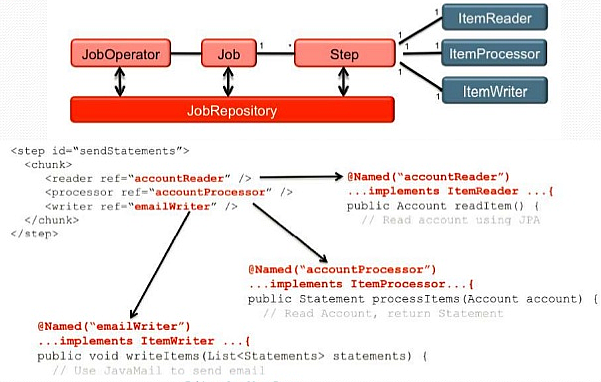

@ServerEndpoint(value="/websocket")
public class MyEndpoint {
@OnMessage
public void message(String message, Session client) {
for (Session peer : client.getOpenSessions()) {
peer.getBasicRemote().sendText(message);
}
}
@OnMessage(maxMessageSize=6)
public ByteBuffer echoBinary(ByteBuffer data) throws IOException {
return data;
}
@OnClose
public void onClose(CloseReason reason) {
System.out.println("Closed: " + reason.getCloseCode()
+ ", " + reason.getReasonPhrase());
}
@OnError
public void onError(Throwable t) { t.printStackTrace(); }
}@ClientEndpoint
public class MyClient {
@OnOpen
public void onOpen(Session session) {
try {
session.getBasicRemote().sendText("Duke");
} catch (IOException ex) {
ex.printStackTrace();
}
}
@OnMessage
public void processMessage(String message) {
System.out.println("Received message in client: " + message);
}
}JsonObject jsonObject = Json.createObjectBuilder()
.add("title", "The Matrix")
.add("year", 1999)
.add("cast", Json.createArrayBuilder()
.add("Keanu Reaves")
.add("Laurence Fishburne")
.add("Carrie-Anne Moss"))
.build();
try (JsonWriter writer = Json.createWriter(out)) {
writer.write(jsonObject);
}JsonReader jsonReader = Json.createReader(...);
JsonObject json = jsonReader.readObject();
assertTrue(json.containsKey("title"));
assertEquals("The Matrix", json.getString("title"));
assertEquals(1999, json.getInt("year"));
java.util.concurrent utilitiesManagedThreadFactory factory =
(ManagedThreadFactory) ctx.lookup("java:comp/DefaultManagedThreadFactory");
Thread thread = factory.newThread(new MyTask(2)); // getting ManageableThread
thread.start();@Resource(name = "DefaultManagedScheduledExecutorService")
ManagedScheduledExecutorService executor;
ScheduledFuture<?> future = executor
.scheduleAtFixedRate(new MyRunnableTask(5), 2, 3, TimeUnit.SECONDS);
@WebServlet(urlPatterns = "/MyAsyncServlet", asyncSupported = true)
public class MyAsyncServlet extends HttpServlet {
@Resource(lookup="java:comp/DefaultManagedExecutorService")
ManagedExecutorService executor;
protected void processRequest(...) throws ... {
AsyncContext ac = request.startAsync();
ac.addListener(new AsyncListener() {
public void onComplete(AsyncEvent event) throws IOException {}
public void onTimeout(AsyncEvent event) throws IOException {}
public void onError(AsyncEvent event) throws IOException {}
public void onStartAsync(AsyncEvent event) throws IOException {}
});
executor.submit(new MyAsyncService(ac));
}@Vetoed
public class NonProcessedBean { }
// package-info.java
@Vetoed
package com.nonprocessed.package;@RequestScoped
public class MyBean {
public String sayHello(@Size(max = 3) String name) { }
@Future // return value constraint
public Date showDate(boolean inFuture) { }
public String showList(@NotNull @Size(min = 1, max = 3) List list,
@NotNull String prefix) {
// ...
}
public void saveZip(@ZipCode String zip) { }
public void saveZipIndia(@ZipCode(country = ZipCode.INDIA) String zip) { }
}
// Each tests throws ConstraintViolationException with
// message constraint class and affected class member name
@Test
public void methodSizeTooLong() {
bean.sayHello("Duke");
}
@Test
public void wrongReturnValue() {
bean.showDate(false);
}
@Test
public void multipleParametersNullSecondParameter() {
List<String> list = new ArrayList<>();
list.add("bar");
bean.showList(list, null);
}Batch processing is execution of "jobs" which are suitable for non-interactive, bulk-oriented and long-running tasks
Supports job/step/chunk listener, workflow definitions, concurrent steps, flow decisions
<?xml version="1.0" encoding="UTF-8"?>
<job id="myJob" xmlns="http://xmlns.jcp.org/xml/ns/javaee" version="1.0">
<flow id="flow1" next="step3">
<step id="step1" next="step2">
<batchlet ref="myBatchlet1"/>
</step>
<step id="step2" >
<chunk item-count="3">
<reader ref="myItemReader"/>
<writer ref="myItemWriter"/>
</chunk>
</step>
</flow>
<step id="step3" >
<batchlet ref="myBatchlet2"/>
</step>
</job>JobOperator jobOperator = BatchRuntime.getJobOperator();
Long executionId = jobOperator.start("myJob", new Properties());
JobExecution jobExecution = jobOperator.getJobExecution(executionId);
// ...
List stepExecutions = jobOperator.getStepExecutions(executionId);
for (StepExecution stepExecution : stepExecutions) {
if (stepExecution.getStepName().equals("myStep")) {
// ...
}
}
assertEquals(jobExecution.getBatchStatus(), BatchStatus.COMPLETED);
} @Stateless
@TransactionManagement(TransactionManagementType.BEAN)
public class SimpleGreetingBean {
// built-in values
@Inject HttpSession httpSession;
@Inject ServletContext servletContext;
@Inject Principal principal;
// custom beans
@Inject Greeting greeting;
public String greet(String name) {
System.out.println("session id: " + httpSession.getId());
System.out.println("context path: " + servletContext.getContextPath());
System.out.println("security principal: " + principal.getName());
return "Hello " + name;
}
}@ApplicationScoped, @RequestScoped, @SessionScoped, @Singleton@Interceptors allow to intercept method invocations & lifecycle events on Java EE managed classes@Observer annotation@Alternative beans for DI with priority control. Explicit select in beans archive.@Decorators:
public interface Greeting {
public String greet(String name);
}decorating calls..
@Decorator
public class MyDecorator implements Greeting {
@Inject @Delegate @Any Greeting greeting;
public String greet(String name) {
return greeting.greet(name + " very much!");
}
}EJB Lite is a subset of the features provided by EJB offering
EJB lite can be directly deployed within .jar archives.
JPA 2.1 introduces Table discriminator
Default resources for JSM, Concurrency, Context Service i.e. java:comp/DefaultJMSConnectionFactory
Support for non-blocking programming model for servlets, i.e.
ReadListener.onDataAvailable() and WriteListener.onWritePossible()